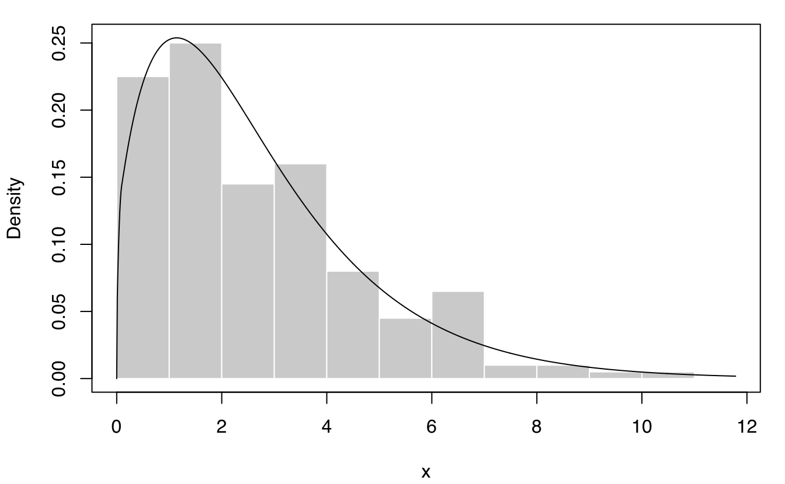
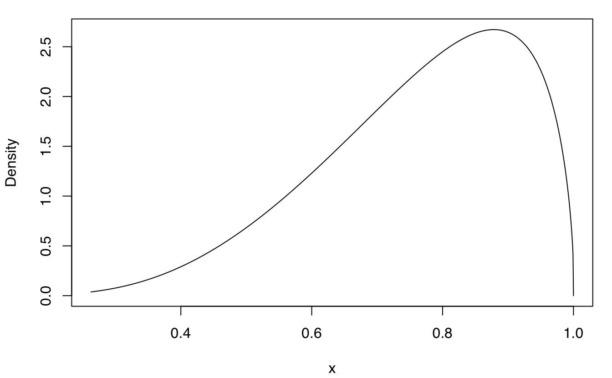
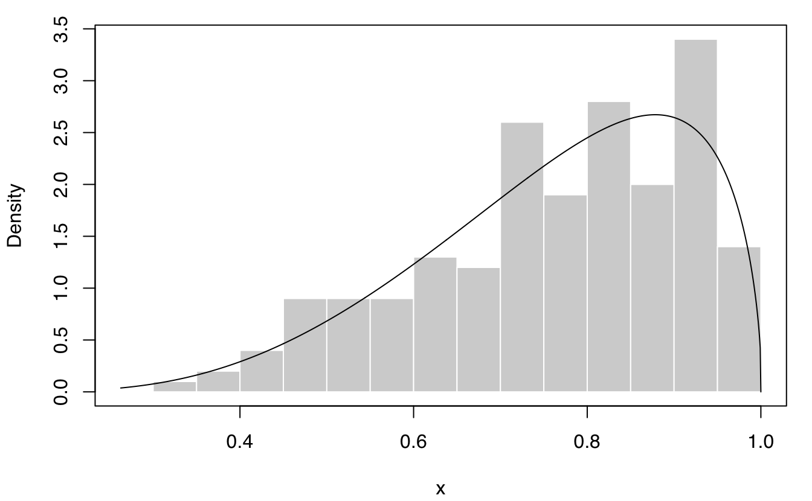
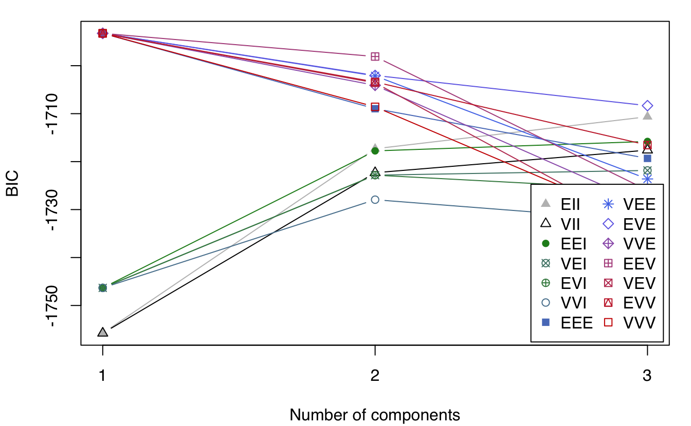
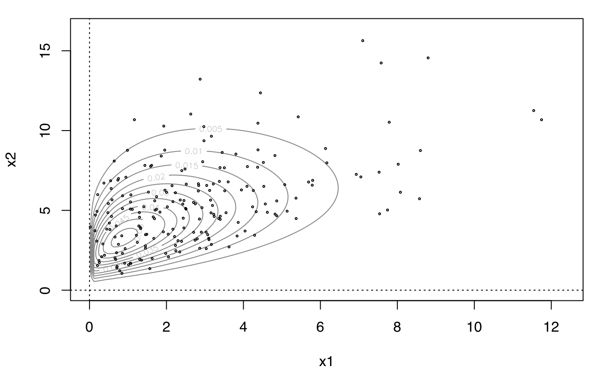
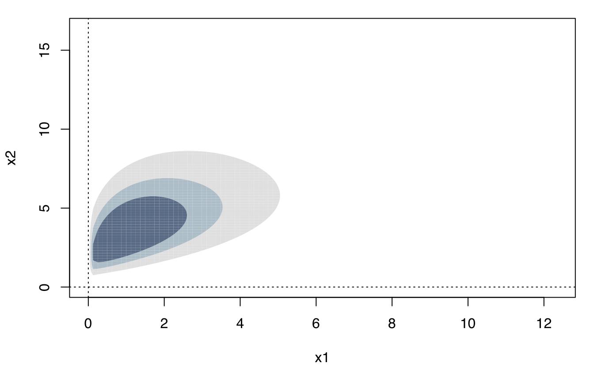
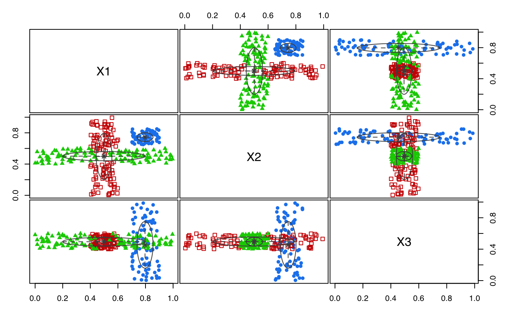

A quick tour of mclustAddons
Luca Scrucca
17 Mar 2023
mclustAddons.RmdIntroduction
mclustAddons is a contributed R package that extends
the functionality available in the mclust package
(Scrucca et al. 2016).
In particular, the following methods are included:
density estimation for data with bounded support (Scrucca, 2019);
modal clustering using modal EM algorithm for Gaussian mixtures (Scrucca, 2021);
entropy estimation via Gaussian mixture modeling (Robin & Scrucca, 2023).
This document gives a quick tour of mclustAddons (version 0.7.2). It was written in R Markdown, using the knitr package for production.
References on the methodologies implemented are provided at the end of this document.
library(mclustAddons)
## Loading required package: mclust
## Package 'mclust' version 6.0.0
## Type 'citation("mclust")' for citing this R package in publications.
## Loaded package 'mclustAddons' version 0.7.2Density estimation for data with bounded support
Univariate case with lower bound
x <- rchisq(200, 3)
xgrid <- seq(-2, max(x), length=1000)
f <- dchisq(xgrid, 3) # true density
dens <- densityMclustBounded(x, lbound = 0)
summary(dens, parameters = TRUE)
## ── Density estimation for bounded data via GMMs ───────────
##
## Boundaries: x
## lower 0
## upper Inf
##
## Model E (univariate, equal variance) model with 1 component
## on the transformation scale:
##
## log-likelihood n df BIC ICL
## -390.0517 200 3 -795.9983 -795.9983
##
## x
## Range-power transformation: 0.3715163
##
## Mixing probabilities:
## 1
## 1
##
## Means:
## 1
## 0.9191207
##
## Variances:
## 1
## 1.309037
plot(dens, what = "density")
lines(xgrid, f, lty = 2)
plot(dens, what = "density", data = x, breaks = 15)
Univariate case with lower & upper bounds
x <- rbeta(200, 5, 1.5)
xgrid <- seq(-0.1, 1.1, length=1000)
f <- dbeta(xgrid, 5, 1.5) # true density
dens <- densityMclustBounded(x, lbound = 0, ubound = 1)
summary(dens, parameters = TRUE)
## ── Density estimation for bounded data via GMMs ───────────
##
## Boundaries: x
## lower 0
## upper 1
##
## Model E (univariate, equal variance) model with 1 component
## on the transformation scale:
##
## log-likelihood n df BIC ICL
## 104.4678 200 3 193.0407 193.0407
##
## x
## Range-power transformation: -0.1600959
##
## Mixing probabilities:
## 1
## 1
##
## Means:
## 1
## 1.164398
##
## Variances:
## 1
## 0.7221851
plot(dens, what = "density")
plot(dens, what = "density", data = x, breaks = 11)
Bivariate case with lower bounds
x1 <- rchisq(200, 3)
x2 <- 0.5*x1 + sqrt(1-0.5^2)*rchisq(200, 5)
x <- cbind(x1, x2)
dens <- densityMclustBounded(x, lbound = c(0,0))
summary(dens, parameters = TRUE)
## ── Density estimation for bounded data via GMMs ───────────
##
## Boundaries: x1 x2
## lower 0 0
## upper Inf Inf
##
## Model VEE (ellipsoidal, equal shape and orientation) model with 1 component
## on the transformation scale:
##
## log-likelihood n df BIC ICL
## -882.0264 200 7 -1801.141 -1801.141
##
## x1 x2
## Range-power transformation: 0.2835466 0.3094675
##
## Mixing probabilities:
## 1
## 1
##
## Means:
## [,1]
## [1,] 0.8882233
## [2,] 2.1712294
##
## Variances:
## [,,1]
## [,1] [,2]
## [1,] 1.1820458 0.4040468
## [2,] 0.4040468 0.9491492
plot(dens, what = "BIC")


plot(dens, what = "density", type = "persp")Suicide data
The data consist in the lengths of 86 spells of psychiatric treatment undergone by control patients in a suicide study (Silverman, 1986).
data("suicide")
dens <- densityMclustBounded(suicide, lbound = 0)
summary(dens, parameters = TRUE)
## ── Density estimation for bounded data via GMMs ───────────
##
## Boundaries: suicide
## lower 0
## upper Inf
##
## Model E (univariate, equal variance) model with 1 component
## on the transformation scale:
##
## log-likelihood n df BIC ICL
## -497.8204 86 3 -1009.004 -1009.004
##
## suicide
## Range-power transformation: 0.1929267
##
## Mixing probabilities:
## 1
## 1
##
## Means:
## 1
## 6.700073
##
## Variances:
## 1
## 7.788326
plot(dens, what = "density",
lwd = 2, col = "dodgerblue2",
data = suicide, breaks = 15,
xlab = "Length of psychiatric treatment")
rug(suicide)Racial data
This dataset provides the proportion of white student enrollment in 56 school districts in Nassau County (Long Island, New York), for the 1992-1993 school year (Simonoff 1996, Sec. 3.2).
data("racial")
x <- racial$PropWhite
dens <- densityMclustBounded(x, lbound = 0, ubound = 1)
summary(dens, parameters = TRUE)
## ── Density estimation for bounded data via GMMs ───────────
##
## Boundaries: x
## lower 0
## upper 1
##
## Model E (univariate, equal variance) model with 1 component
## on the transformation scale:
##
## log-likelihood n df BIC ICL
## 42.4598 56 3 72.84355 72.84355
##
## x
## Range-power transformation: 0.3869476
##
## Mixing probabilities:
## 1
## 1
##
## Means:
## 1
## 2.795429
##
## Variances:
## 1
## 5.253254
plot(dens, what = "density",
lwd = 2, col = "dodgerblue2",
data = x, breaks = 15,
xlab = "Proportion of white student enrolled in schools")
rug(x)Modal clustering using MEM algorithm for Gaussian mixtures
Simulated datasets
MEM <- MclustMEM(GMM)
summary(MEM)
## ── Modal EM for GMMs ───────────────────
##
## Data dimensions = 600 x 2
## Mclust model = EEV,6
## MEM iterations = 17
## Number of modes = 4
##
## Modes:
## X1 X2
## mode1 8.06741504 -0.01772230
## mode2 8.07370160 4.98485099
## mode3 1.10622966 4.97230749
## mode4 -0.01639289 0.06464381
##
## Modal clustering:
## 1 2 3 4
## 118 122 228 132
plot(MEM)
plot(MEM, addPoints = FALSE)
MEM <- MclustMEM(GMM)
summary(MEM)
## ── Modal EM for GMMs ───────────────────
##
## Data dimensions = 300 x 3
## Mclust model = EVI,3
## MEM iterations = 15
## Number of modes = 2
##
## Modes:
## X1 X2 X3
## mode1 0.7964915 0.7444244 0.4547285
## mode2 0.4996361 0.5014374 0.4957522
##
## Modal clustering:
## 1 2
## 78 222
plot(MEM)
plot(MEM, addDensity = FALSE)Entropy estimation
Simulated data
Univariate Gaussian
EntropyGauss(1) # population entropy
## [1] 1.418939
x = rnorm(1000) # generate sample
EntropyGauss(var(x)) # sample entropy assuming Gaussian distribution
## [1] 1.430299
mod = densityMclust(x, plot = FALSE)
EntropyGMM(mod) # GMM-based entropy estimate
## [1] 1.429799
plot(mod, what = "density", data = x, breaks = 31); rug(x)Univariate Mixed-Gaussian
Consider the mixed-Gaussian distribution \(f(x) = 0.5 \times N(-2,1) + 0.5 \times
N(2,1)\), whose entropy is 2.051939 in the population.
cl = rbinom(1000, size = 1, prob = 0.5)
x = ifelse(cl == 1, rnorm(1000, 2, 1), rnorm(1000, -2, 1)) # generate sample
mod = densityMclust(x, plot = FALSE)
EntropyGMM(mod) # GMM-based entropy estimate
## [1] 2.042949
plot(mod, what = "density", data = x, breaks = 31); rug(x)
Multivariate Chi-squared
Consider a 10-dimensional independent \(\chi^2\) distribution, whose entropy is
24.23095 in the population.
x = matrix(rchisq(1000*10, df = 5), nrow = 1000, ncol = 10)
mod1 = densityMclust(x, plot = FALSE)
EntropyGMM(mod1) # GMM-based entropy estimate, not too bad but...
## [1] 24.85662
mod2 = densityMclustBounded(x, lbound = rep(0,10))
EntropyGMM(mod2) # much more accurate
## [1] 24.16911Faithful data
data(faithful)
mod = densityMclust(faithful, plot = FALSE)
EntropyGMM(mod) # GMM-based entropy estimate
## [1] 4.140889
# or provide the data and fit GMM implicitly
EntropyGMM(faithful)
## [1] 4.140889Iris data
data(iris)
mod = densityMclust(iris[,1:4], plot = FALSE)
EntropyGMM(mod) # GMM-based entropy estimate
## [1] 1.438173References
Scrucca L., Fop M., Murphy T. B. and Raftery A. E. (2016) mclust 5: clustering, classification and density estimation using Gaussian finite mixture models. The R Journal 8/1, pp. 289-317. https://doi.org/10.32614/RJ-2016-021
Scrucca L. (2019) A transformation-based approach to Gaussian mixture density estimation for bounded data, Biometrical Journal, 61:4, 873–888. https://doi.org/10.1002/bimj.201800174
Scrucca L. (2021) A fast and efficient Modal EM algorithm for Gaussian mixtures. Statistical Analysis and Data Mining, 14:4, 305–314. https://doi.org/10.1002/sam.11527
Robin S. and Scrucca L. (2023) Mixture-based estimation of entropy. Computational Statistics & Data Analysis, 177, 107582. https://doi.org/10.1016/j.csda.2022.107582
sessionInfo()
## R version 4.2.2 (2022-10-31)
## Platform: x86_64-apple-darwin17.0 (64-bit)
## Running under: macOS Big Sur ... 10.16
##
## Matrix products: default
## BLAS: /Library/Frameworks/R.framework/Versions/4.2/Resources/lib/libRblas.0.dylib
## LAPACK: /Library/Frameworks/R.framework/Versions/4.2/Resources/lib/libRlapack.dylib
##
## locale:
## [1] en_US.UTF-8/en_US.UTF-8/en_US.UTF-8/C/en_US.UTF-8/en_US.UTF-8
##
## attached base packages:
## [1] stats graphics grDevices utils datasets methods base
##
## other attached packages:
## [1] mclustAddons_0.7.2 mclust_6.0.0 knitr_1.42
##
## loaded via a namespace (and not attached):
## [1] Rcpp_1.0.10 rstudioapi_0.14 magrittr_2.0.3 R6_2.5.1
## [5] rlang_1.0.6 foreach_1.5.2 fastmap_1.1.0 highr_0.10
## [9] stringr_1.5.0 tools_4.2.2 xfun_0.37 cli_3.6.0
## [13] jquerylib_0.1.4 iterators_1.0.14 htmltools_0.5.4 yaml_2.3.7
## [17] digest_0.6.31 rprojroot_2.0.3 lifecycle_1.0.3 crayon_1.5.2
## [21] pkgdown_2.0.7 purrr_1.0.1 codetools_0.2-18 sass_0.4.5
## [25] vctrs_0.5.2 fs_1.6.1 memoise_2.0.1 glue_1.6.2
## [29] cachem_1.0.6 evaluate_0.20 rmarkdown_2.20 stringi_1.7.12
## [33] compiler_4.2.2 bslib_0.4.2 desc_1.4.2 jsonlite_1.8.4